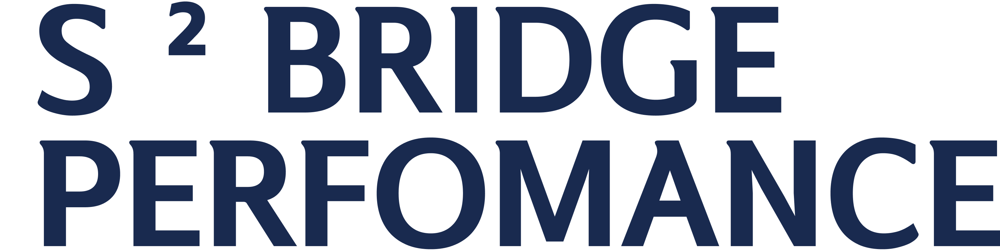
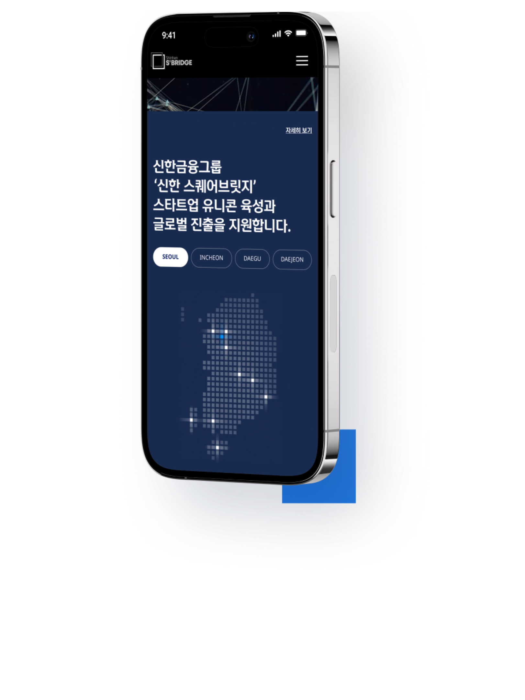
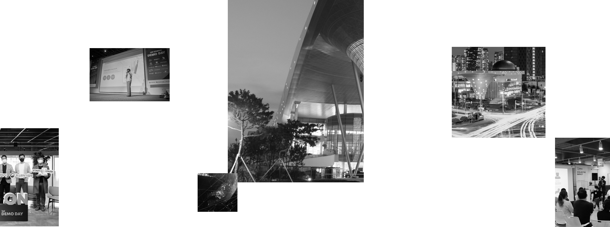
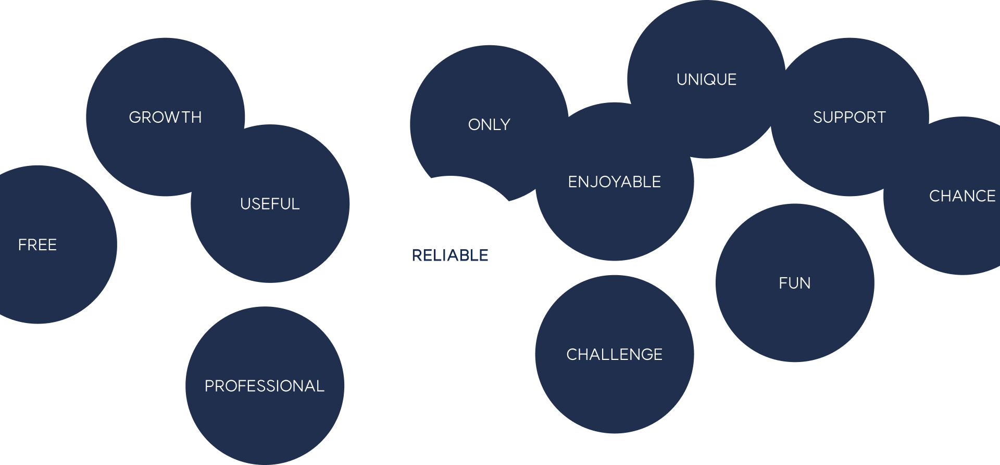

Shinhan S² Bridge
ui concept & identity desgin
icon & infographic
app
dashborad
2022

전문적인 이미지를 통해 스타트업과 투자자를 연결해주는
Shinhan S² Bridge UI 디자인 제작
Shinhan S² Bridge UI 디자인 제작
본 프로젝트는 혁신적인 기술과 사업을 투자하여 성공 가능성을
높이고 성장 가속화를 높이는
Accelerating 사업을 기획하는데서 시작되었습니다. 이미 과열되어 있는 현재 시장에서
신한이 국내 시장에서의 뚜렷한 얼굴을 드러내기 위해 시장에 맞는 경험과 전략을 통해 확장성있는
브랜드 이미지를 제안하였습니다. Shinhan S² Bridge의 전문적인 이미지를 강조하고
더나아가 서비스의 신뢰도를 높일 수 있는 UI 디자인을 제작하였습니다.
Accelerating 사업을 기획하는데서 시작되었습니다. 이미 과열되어 있는 현재 시장에서
신한이 국내 시장에서의 뚜렷한 얼굴을 드러내기 위해 시장에 맞는 경험과 전략을 통해 확장성있는
브랜드 이미지를 제안하였습니다. Shinhan S² Bridge의 전문적인 이미지를 강조하고
더나아가 서비스의 신뢰도를 높일 수 있는 UI 디자인을 제작하였습니다.
Shinhan S² Bridge
Web,Mobile
UI Design
Web,Mobile
UI Design
이미 과열되어 있는 현재 시장에서 신한이
국내 시장에서의 뚜렷한 얼굴을 드러내기 위해
스타트업과 투자자 사이에 아름다운 상생이 실현되기 위한
‘연결’의 가치를 제안합니다.
이를 기반으로 상생이라는 이미지가 연상될 수 있는
시각 자산을 활용하여 Accelerating 사업의 전문성과
대표성이 두드러지는 브랜드 경험을 제안합니다.
국내 시장에서의 뚜렷한 얼굴을 드러내기 위해
스타트업과 투자자 사이에 아름다운 상생이 실현되기 위한
‘연결’의 가치를 제안합니다.
이를 기반으로 상생이라는 이미지가 연상될 수 있는
시각 자산을 활용하여 Accelerating 사업의 전문성과
대표성이 두드러지는 브랜드 경험을 제안합니다.




design criteria
visual language
